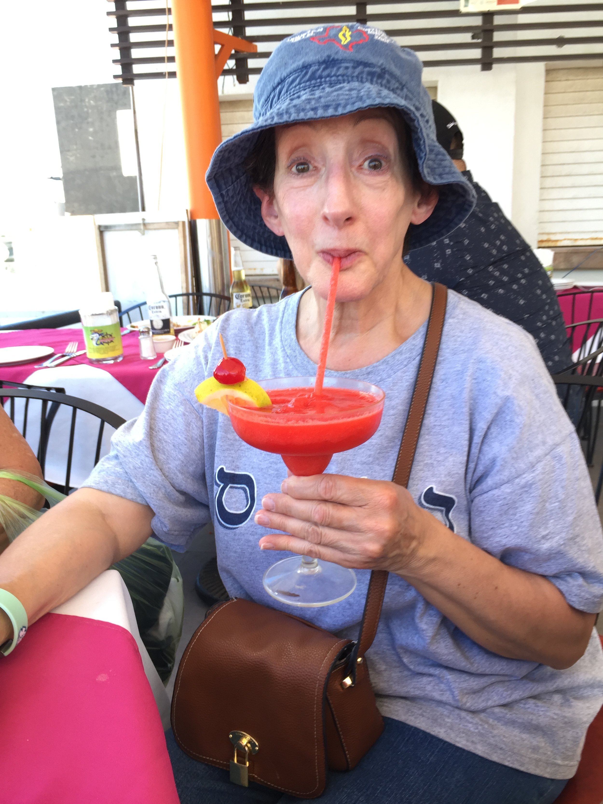
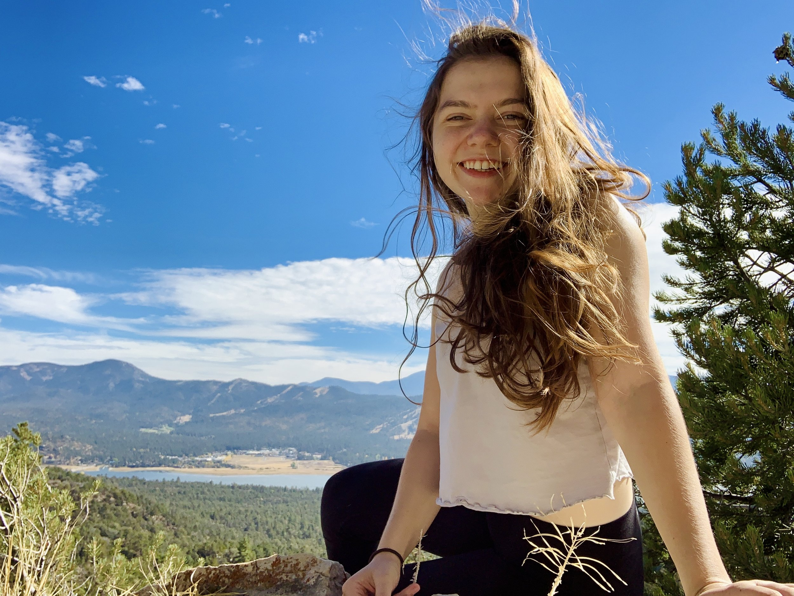
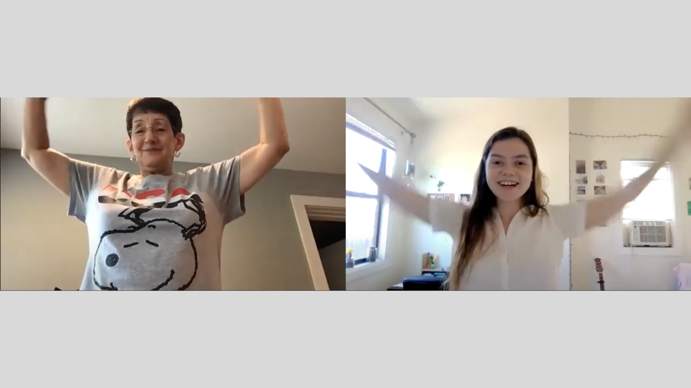
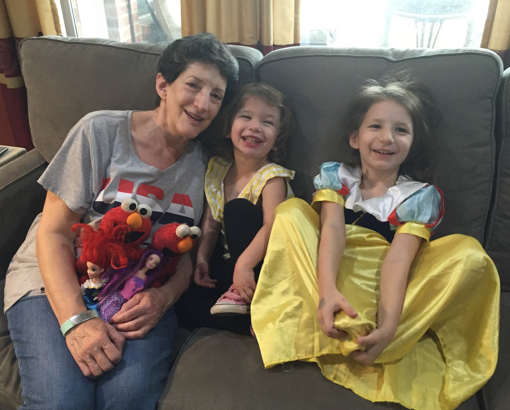
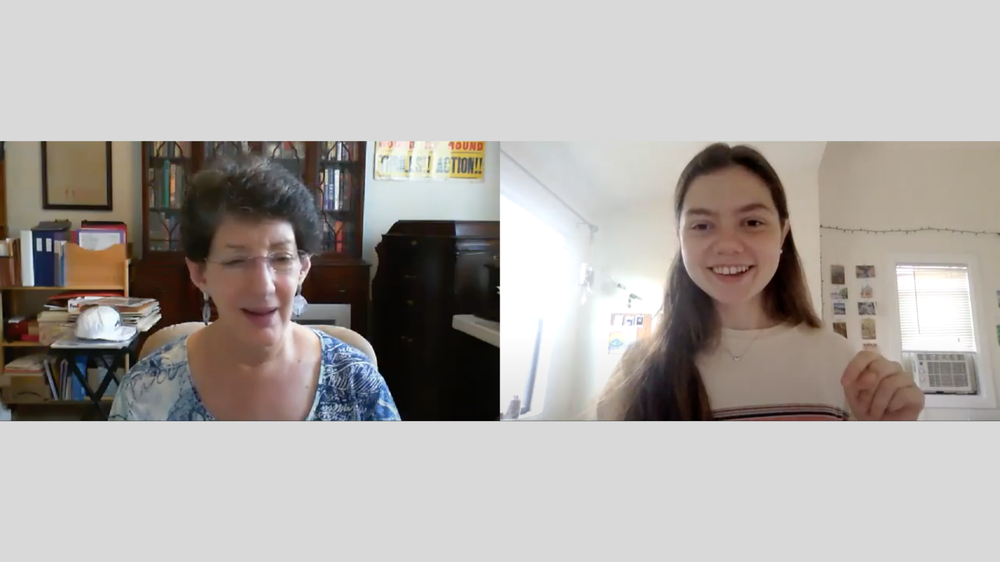
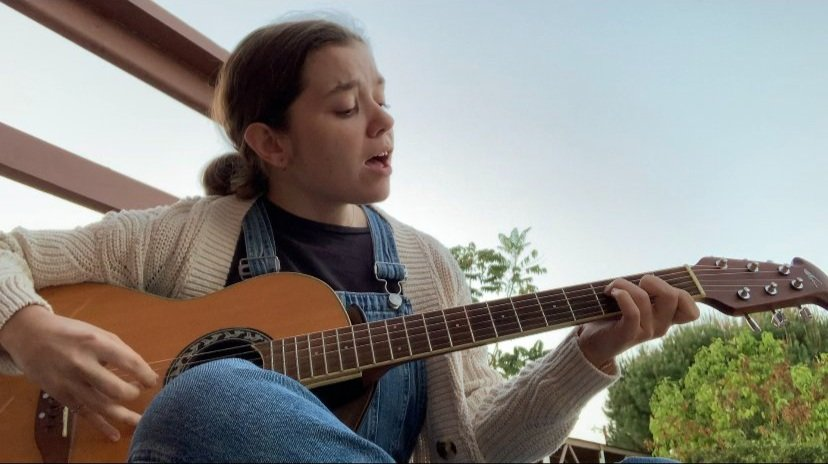

“There’s no question that having a hearing loss presents challenges in more ways than one, but I’m proud of how I’ve never let it get me down, never stopped me from doing things, and most of all, never have let it be the only thing that defines me as the person that I am.”
“Singing is so much more than singing perfectly on pitch and beautifully all the time. I learned about a new way of teaching singing- one that does not focus as heavily on sound, but rather on feeling.”
Paula Holzband
Here, My Voice Participant
My name is Paula Holzband. I’m an Okie, born and raised in Tulsa, Oklahoma, eventually moving to Texas where I’ve lived for the past 52 years. I’ve been married to my “very special person” Lenny for 49 years this coming October. We have our son, daughter-in-law and two granddaughters, the lights of our lives in Austin.
I have binaural sensorineural hearing loss, wore hearing aids beginning with one at 5-6 years old, a 2nd one in my early 20’s, then got my first cochlear implant at 60, and my second one at 62. There’s no question that having a hearing loss presents challenges in more ways than one, but I’m proud of how I’ve never let it get me down, never stopped me from doing things, and most of all, never have let it be the only thing that defines me as the person that I am.

Julianne Papadopoulos
Here, My Voice Teacher | Master of Musical Arts, Community Music at USC Thornton School of Music

Paula’s Experience
When I was first told about this study, I was interested, but at the same time, felt quite hesitant in doing it. However, it really didn’t take me that long to decide that I wanted to do it because it would definitely be outside of my comfort zone. I have to say that it’s been a very interesting and certainly an enjoyable experience for me because I’ve always enjoyed listening to music.
Having no musical knowledge or background, my teacher, Julianne Papadopoulos, introduced me to various exercises, techniques, etc. She was right there along with me doing them during every lesson, enjoying what we were doing. Through Julianne, I’ve learned about putting myself wholly in what I’m singing, which could also apply to speaking. In one lesson, we were quite animated when we were singing “Oh What a Beautiful Morning,” the other song I chose for my lessons.
Julianne understood how I felt about my voice, but she inspired me to keep going. For that, I’m grateful, and will keep pushing myself as I have during and outside the lessons to hopefully get more comfortable with my singing and speaking voice.


Julianne’s Experience
I think that Paula really developed a new sense of confidence from straying far outside of her comfort zone. After speaking through one of her songs one day, she even told me that she felt more confident in her expression and her ability to share the words of the song. While singing is still something very new and vulnerable for Paula, I am really proud of how far she has come, to the point of being able to record herself singing and now even sharing this video with the rest of the Here, My Voice group.
I learned about a new way of teaching singing- one that does not focus as heavily on sound, but rather on feeling. Regardless of the student you are teaching, focusing on the physical and emotional feeling of singing is essential because it allows people to find a personal tie to the music and can in the long run help improve technique. I am excited to use this new sense of creativity and emotional expression in future voice lessons.
I think most importantly, I learned to think outside of the box when teaching voice lessons. Singing is so much more than singing perfectly on pitch and beautifully all the time. However, we are not always reminded of this during traditional voice lessons. With Paula, I had the opportunity to focus more on different forms of vocal and physical expression. This work not only had a positive effect on her emotional experience during lessons, but also her technique. This is important for me to keep in mind during lessons moving forward.

